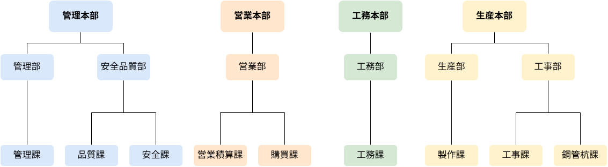

会社概要
COMPANY
私たち、
金秀鉄工株式会社とは？
01 / MESSAGE
代表挨拶
02 / PROFILE
会社情報・建設業許可
| 創業 | 1947年（昭和22年）5月22日 |
|---|---|
| 設立 | 2008年（平成20年）4月1日 |
| 資本金 | 1億円 |
| 社員数 | 72名（役員、契約社員含／2026年10月1日時点） |
| 代表取締役社長 | 照屋 賢治 |
| 事業内容 | 鉄骨･橋梁･鋼構造物の設計･施工の業務 FRP製品の製作･施工 橋梁商品の設計･製作･施工 「パネルブリッジ™」「角太橋®」 鋼管杭G-ECS･N-ECSパイル工法 販売代理店 |
| 所在地 | 〒903-0118 沖縄県中頭郡西原町字小波津567番地 |
| 電話／FAX | |
| 工場敷地面積 | 敷地面積 約49,000m²（約14,800坪） 工場建屋 約4,800m²（約1,450坪） |
部門の電話番号は、ご提供の2026年10月8日付修正指示書を反映しています。社員数は2026年10月1日時点です。
建設業許可
| 特定建設業許可 | 第11355号 |
|---|---|
| 国土交通大臣認定鋼構造物製作工場 | Hグレード認定 認定番号：TFBH-245642 |
03 / ORGANIZATION
組織図

管理本部・営業本部・工務本部・生産本部の4本部で構成しています。
組織の詳細を読む04 / HISTORY
沿革
19475月22日
鉄工所の名称で創業者呉屋秀信が沖縄県西原村字我謝において個人創業（鍬、鎌、その他農機具の製作販売）
195012月
合資会社へ組織変更
199812月
ISO 9001審査登録
20084月1日
金秀建設㈱より分社 金秀鉄工㈱設立
202211月
金秀鉄工㈱第三工場竣工
05 / QUALITY & SAFETY
許可・認証
H GRADE
鋼構造物製作工場
Hグレード認定
ISO 9001
品質
ISO 45001
労働安全衛生
06 / IN NUMBERS
数字で見る金秀鉄工
2026年10月1日時点
創業
1947年
1947年（昭和22年）5月22日社員数
72名
役員、契約社員含／公式掲載値工場敷地面積
約49,000m²
公式掲載値07 / SDGs
SDGsへの取り組み
健康と働きやすさ
- 日本赤十字社への献血活動
- 定期健康診断・ストレスチェック
- インフルエンザ予防接種
学びと技術の継承
- 管理職による技術勉強会
- 社内溶接コンクール
- QC活動を通じた改善
資源を大切にするものづくり
- 金属スクラップの回収・再利用
- 工事残材料を活用した社内設備の整備
- 低燃費・低排出ガス車への更新
出典：金秀鉄工 公式サイト（会社情報） ｜ 2026年10月3日確認
SDGsの活動内容は公式採用情報をもとに整理しています。